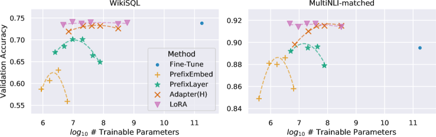

参数高效微调
7B 模型做全参数 SFT，光权重 + 优化器状态就要吞掉近 100GB 显存。不是人人都有多张 A100，但人人都想训自己的模型。PEFT（Parameter-Efficient Fine-Tuning，参数高效微调）的思路很直白：不是所有参数都需要更新，找到一小撮「有效果的」去动就行。LoRA 是其中最成功的方案。
全参数微调要更新全部 $d \times d$ 的权重矩阵，计算量和显存都是灾难级。LoRA 的核心假设是：微调带来的权重变化 $\Delta W$ 是低秩的，可以用两个小矩阵的乘积来近似。原来训练一个大的 $d \times d$ 矩阵，现在只需要训练一个把维度压到 $r$ 的 $A$ 和一个把维度撑回去的 $B$。$r$ 通常取 8 到 64，而 $d$ 常见是 4096，可训练参数量因此缩小两三个数量级。
d 维"] --> W["冻结的原始权重 W
d × d
不更新"] X --> A["LoRA A
把 d 降到 r
可训练"] A --> B["LoRA B
把 r 升回 d
可训练"] W --> SUM(["+
输出 = Wx + BAx"]) B --> SUM SUM --> O["输出
d 维"] style W fill:#f1f3f6,stroke:#d0d5de style A fill:#e6f1fb,stroke:#185fa5 style B fill:#e6f1fb,stroke:#185fa5
为什么需要 PEFT：先算一笔显存账
直接全参数微调一个 7B 模型到底要多大显存？把账拆开：
| 项目 | 计算 | 大小（7B 模型，FP16） |
|---|---|---|
| 模型权重 | $7 \times 10^9 \times 2$ 字节 | ~14 GB |
| 梯度 | 每个可训练参数存一份，大小同权重 | ~14 GB |
| Adam 优化器状态 | 一阶矩 $m$ + 二阶矩 $v$，FP32，各 4 字节/参数 | $7B \times 8$ = ~56 GB |
| 前向激活 | 取决于 batch size 和序列长度 | ~10-40 GB（可变） |
合计：约 94-124 GB，还不算显存碎片。也就是说一个 7B 模型的全参数微调，至少需要 2-3 张 A100 80GB 或者一张 H100 80GB（还得把 batch size 压到很小）。更别提 13B、70B 的模型了。
这笔账里最刺眼的是 Adam 优化器状态占了 56GB，是权重本身的四倍。原因是它给每个可训练参数各存了一份 FP32 的一阶矩和二阶矩。这就给出了 PEFT 的突破口：只要「可训练参数」这个集合足够小，梯度和优化器状态就会一起消失。冻结的权重虽然还要占 14GB，但它们不需要梯度、不需要动量，甚至可以被量化成 4-bit。
| 方案 | 基座权重 | 梯度 + 优化器状态 | 典型总显存量级（7B） | 能跑在什么卡上 |
|---|---|---|---|---|
| 全参微调 | FP16，~14 GB | 跟着全部 7B 参数走，~70 GB | 百 GB 量级 | 多卡 A100 / H100，需并行策略 |
| LoRA | FP16 冻结，~14 GB | 只跟着适配器走，通常不足 1 GB | 二十 GB 上下 | 单张 A100 / 部分消费级大显存卡 |
| QLoRA | NF4 量化冻结，~4 GB 量级 | 同上，另加分页优化器兜底 | 十几 GB | 单张 24 GB 消费级显卡 |
表里的激活值一项没有单列，因为它跟 batch size 和序列长度直接相关，而且梯度检查点可以把它换成算力。要提醒的是：LoRA 并不减少激活值显存——前向照样要走完整个网络。所以当你把 batch 或序列开得很大时，激活值会重新变成瓶颈，这时候要开梯度检查点，细节见 混合精度与显存优化。
PEFT 不只有 LoRA：先看清整个方法族
LoRA 现在几乎等同于 PEFT，但它其实是这条路线走到第三代的产物。理解前两代在做什么，能帮你明白 LoRA 为什么赢。
参数高效微调")) 加模块 Adapter 在层间插入小瓶颈网络 推理时无法消除 有额外延迟 IA3 学习缩放向量去乘激活 参数量极小 改输入 Prompt Tuning 只训练一段连续的软提示 模型越大越有效 Prefix Tuning 给每层注意力加可训练前缀 占用上下文预算 选参数 BitFit 只训练偏置项 最省 但能力上限低 部分层解冻 只训最后若干层 重参数化 LoRA 低秩增量 可合并回权重 推理零额外开销 QLoRA 基座量化到 4bit DoRA 幅度与方向分开学 AdaLoRA 按重要性动态分配秩
| 方法 | 可训练参数放在哪 | 推理时额外开销 | 能否合并回权重 | 现状 |
|---|---|---|---|---|
| Adapter | 层与层之间插入的瓶颈 MLP | 有，每层多两次矩阵乘 | 不能 | 历史意义大，生产已少用 |
| Prompt Tuning | 输入前拼接的连续向量 | 有，占用上下文长度 | 不能 | 小模型上效果不稳，大模型上尚可 |
| Prefix Tuning | 每层注意力的 K/V 前缀 | 有，等效于常驻一段 KV Cache | 不能 | 已被 LoRA 基本取代 |
| BitFit | 只训练所有偏置项 | 无 | 本身就是原参数 | 参数量极小，能力上限低 |
| LoRA 系 | 权重矩阵旁的低秩增量 | 合并后为零 | 能 | 事实标准 |
看这张表就能明白 LoRA 胜出的关键：「能否合并回权重」这一列。Adapter 和 Prefix 系方法在训练时确实省显存，但代价是推理时永远背着一个额外结构——多几次矩阵乘、多占一段上下文。对一个每天要服务上亿次请求的系统来说，这个常驻开销是不可接受的。LoRA 因为形式上就是「原权重加一个同形状的增量」，训完把增量加进去，模型结构一个字节都没变。
LoRA：低秩假设
LoRA（Low-Rank Adaptation）基于一个被反复验证的观察：微调带来的权重更新矩阵 $\Delta W$ 通常是低秩的——换句话说，要让模型适应新任务，不需要大动干戈地修改所有权重，只需要沿着少数几个「方向」做微调就够了。
于是 LoRA 把 $\Delta W$ 显式分解为两个小矩阵的乘积：
逐项解释：
- $W_0 x$：原始（冻结的）权重的前向输出，训练时 $W_0$ 不更新。
- $A \in \mathbb{R}^{r \times d_{\text{in}}}$：从输入维度压缩到秩 $r$，$A$ 通常用 Kaiming 均匀分布初始化。
- $B \in \mathbb{R}^{d_{\text{out}} \times r}$：从秩 $r$ 扩张回输出维度，$B$ 初始化为零矩阵——保证训练从「不加任何改动」开始。
- $r \ll d$：秩远小于隐层维度，$r$ 取 8 时，A 和 B 的参数量加起来只有原始权重的约 $8/4096 \approx 0.2\%$。
- $\alpha / r$：缩放因子。$\alpha$ 是一个超参数，控制 LoRA 更新的有效强度。$\alpha$ 可以适当调节而不必修改学习率，通常取 $\alpha = 2r$ 或 $\alpha = r$。
展开：低秩假设从哪来？为什么 $B$ 必须初始化为零？
低秩假设的来源。它不是 LoRA 凭空拍脑袋的。在 LoRA 之前，已有工作研究「微调任务的内在维度」——把微调限制在一个随机采样的低维子空间里，仍然能达到接近全参微调的效果，而且模型越大，所需的内在维度反而越低。这个现象的解释是：预训练已经把绝大部分「通用能力」写进权重了，适配一个下游任务需要改变的信息量本来就很少。LoRA 做的是把这个观察工程化——不去随机采样子空间，而是让模型自己学出这个子空间的基（也就是 $A$ 的行空间）。
为什么 $B = 0$、$A$ 随机。核心要求是：训练开始的瞬间，$BA = 0$，模型输出与原基座逐比特一致。这保证了训练是从一个已知的好点出发的平滑扰动，而不是一开始就把模型踹进一个随机方向。
那为什么不干脆两个都置零？因为如果 $A = 0$ 且 $B = 0$，梯度也会全为零——$\partial(BA)/\partial B \propto A = 0$，$\partial(BA)/\partial A \propto B = 0$，两边互相锁死，参数永远动不了。所以必须一边随机、一边置零：随机的那一边提供非零梯度通路，置零的那一边保证初始输出不变。谁随机谁置零在实现上可以互换，主流实现选择 $A$ 随机、$B$ 置零。
关于 $\alpha/r$ 这个缩放。原始设计里除以 $r$ 是为了让「改变 $r$ 时不用重新调学习率」。但后来有工作指出，当 $r$ 变大时 $\alpha/r$ 会把更新压得过小，导致高秩 LoRA 学不动，从而造成「加秩没用」的错觉；改用 $\alpha/\sqrt{r}$ 的缩放（rank-stabilized LoRA）能让大秩真正发挥作用。如果你实测发现加秩完全没有收益，值得检查一下框架用的是哪种缩放，具体参数名以官方文档为准。

这张图是 LoRA 论文里最常被引用的实证：横轴是可训练参数量（对数刻度，从几千到几百亿），纵轴是验证准确率，两条子图分别对应 WikiSQL 和 MNLI-matched 两个数据集。每条曲线代表一种微调方法，曲线越靠左（参数越少）且越靠上（准确率越高）就越好。
看两条关键曲线。灰色虚线是 Fine-Tune（全量微调）：它落在图的最右侧，因为要更新 175B 全部参数，准确率当然最高，但它用的参数是 LoRA 的几千倍。红色实线是 LoRA：它的点集中在横轴最左端——以约 0.01% 的可训练参数——准确率却几乎贴着全量微调那条线。两旁的 Adapter、BitFit 等对比方法，要么参数比 LoRA 多、要么准确率比 LoRA 低，被挤在中间。
这张图想传递的核心信息只有一句：微调阶段真正需要的「自由度」远比参数量小——在 175B 规模的模型上，几千分之一的可训练参数就够了。这也是本页「低秩假设」那一节的实证基础：不是 LoRA 的作者拍脑袋决定只训一点点参数，而是他们先用这张图证明了「一点点」确实够用。读懂这张图，你就理解了 PEFT 为什么能成为事实标准。
LoRA 层长什么样：一份最小实现
把上面的公式写成代码只有十几行。理解这段代码，你就理解了所有 LoRA 框架在做什么。
LoRALinear 把原来的线性层整个包起来，原层冻结、旁路可训。merge() 与 unmerge() 这对方法就是「上线合并」与「回滚」的实现，也是多适配器热切换能成立的基础。import math
import torch
import torch.nn as nn
class LoRALinear(nn.Module):
"""把一个已有的 nn.Linear 包装成带低秩旁路的版本。"""
def __init__(self, base: nn.Linear, r=16, alpha=32, dropout=0.05):
super().__init__()
self.base = base
for p in self.base.parameters(): # 冻结原权重
p.requires_grad = False
d_in, d_out = base.in_features, base.out_features
self.r = r
self.scaling = alpha / r # 想用 rsLoRA 就换成 alpha / math.sqrt(r)
self.dropout = nn.Dropout(dropout)
# A 随机初始化,B 置零 -> 初始时 BA = 0,输出与基座完全一致
self.lora_A = nn.Parameter(torch.empty(r, d_in))
self.lora_B = nn.Parameter(torch.zeros(d_out, r))
nn.init.kaiming_uniform_(self.lora_A, a=math.sqrt(5))
self.merged = False
def forward(self, x):
out = self.base(x)
if not self.merged:
# dropout 只作用在旁路输入上,主通路保持确定性
delta = self.dropout(x) @ self.lora_A.T @ self.lora_B.T
out = out + self.scaling * delta
return out
@torch.no_grad()
def merge(self):
"""把 BA 加进基座权重,推理时零额外开销。"""
if self.merged:
return
self.base.weight.data += self.scaling * (self.lora_B @ self.lora_A)
self.merged = True
@torch.no_grad()
def unmerge(self):
"""减回去,恢复到可切换适配器的状态。"""
if not self.merged:
return
self.base.weight.data -= self.scaling * (self.lora_B @ self.lora_A)
self.merged = False
def inject_lora(model, target_keywords=("q_proj", "v_proj"), **kw):
"""按名字关键词把模型里的线性层替换成 LoRALinear。"""
for name, module in list(model.named_modules()):
for child_name, child in list(module.named_children()):
full = f"{name}.{child_name}" if name else child_name
if isinstance(child, nn.Linear) and any(k in full for k in target_keywords):
setattr(module, child_name, LoRALinear(child, **kw))
return model三个实现细节值得留意。第一，dropout 加在旁路的输入上而不是输出上，这样主通路的计算完全确定，推理时关掉 dropout 后行为与训练一致。第二，merge() 是原地修改基座权重的，所以合并前一定要确认你不再需要切换适配器，或者保留一份未合并的权重副本。第三，inject_lora 用名字关键词匹配来决定注入哪些层——这就是各框架里 target_modules 参数的本质，不同模型家族的层命名不一样，配错了会静默地什么都没注入。
target_modules 写错了名字，代码不会报错，训练也照跑，只是可训练参数为 0 或极少，loss 几乎不动，你会白白浪费几个小时。一行检查：把 requires_grad=True 的参数数量求和，跟总参数量比一下，正常应在千分之几的量级。
秩 r 怎么选
这是 LoRA 使用者最高频的实操问题。答案没有放之四海而皆准的取值，但有几个清晰的导向：
| $r$ 值 | 可训练参数量 | 表达能力 | 过拟合风险 | 适用场景 |
|---|---|---|---|---|
| 4-8 | 极小 | 受限 | 低 | 轻量任务适配、已知已有较强能力只需微调行为 |
| 16-32 | 较小 | 中等 | 中低 | 常见微调场景，平衡性价比 |
| 64-128 | 较大 | 强 | 中高 | 复杂指令跟随、多任务混合、数据量较大 |
| 256+ | 接近全参 | 接近全参 | 高 | 数据量充分时接近全参微调效果，但失去了 PEFT 的意义 |
实践经验：从 $r=16$ 起步。数据少（几百条）时降 $r$，数据丰富（几万条以上）时升 $r$。关键的不是 $r$ 的绝对值，而是可训练参数总量与数据量的比例——这个比例越接近全参数 SFT 的经验配比，效果越不容易坍缩。
超参速查
| 超参 | 常见起点 | 调它的信号 | 踩坑提醒 |
|---|---|---|---|
r | 16 | 欠拟合就升，过拟合就降 | 升 $r$ 记得同步看缩放方式 |
lora_alpha | $2r$ | 更新太弱就升 | 升 $\alpha$ 近似等于升学习率，两个别同时大改 |
lora_dropout | 0 到 0.1 | 数据少、过拟合时上调 | 数据充足时设 0 通常更好 |
| 学习率 | $10^{-4}$ 量级 | loss 不动就升，震荡就降 | 比全参高约一个数量级是常态，不是配错了 |
target_modules | 注意力的 Q、V | 能力不够就加 K、O 和 FFN | 层名因模型而异，配错会静默无效 |
| 是否训练偏置 | 不训练 | 需要极致轻量微调时可只训偏置 | 训偏置会让合并逻辑变复杂 |
| 是否扩词表 | 否 | 加了新特殊 token 才需要 | 扩词表必须同时训练嵌入层和输出头，否则新 token 是随机向量 |
展开：手算一遍 LoRA 到底省了多少参数和显存
用一个 7B 模型、$d=4096$ 维的注意力投影层为例，把「省了多少」算到数字级别。
先算一个层的参数。假设某个注意力线性层的输入输出都是 4096 维，那么它原来的权重矩阵 $W \in \mathbb{R}^{4096 \times 4096}$，参数量是 $4096 \times 4096 \approx 1678$ 万。全参数微调时，这一层的梯度、Adam 的一阶矩和二阶矩（FP32 各 4 字节）都要跟着走，光这一层的优化器状态就是 $1678万 \times 8$ 字节 ≈ 134 MB。
再算加了 LoRA 之后。取 $r=16$，则 $A \in \mathbb{R}^{16 \times 4096}$、$B \in \mathbb{R}^{4096 \times 16}$，合计 $2 \times 16 \times 4096 \approx 13.1$ 万参数，只有原来的 $13.1万 / 1678万 \approx 0.78\%$。优化器状态跟着缩到约 1 MB——这一层就省下 133 MB。整个 7B 模型有几十个这样的投影层（Q、K、V、O、两个 FFN 各两段），把每层的节省累加起来，就是「二十 GB 上下 vs 百 GB 量级」差距的主要来源。
为什么常常算不满这个比例。因为 $r=16$ 时 0.78% 只是单层的比例；实际配置往往只在部分层注入 LoRA（比如只挂 Q、V），冻结的层完全不产生梯度和优化器状态，所以整体可训练参数占比通常落在千分之几。这也是「打印可训练参数占比」这个自检的数值预期——如果你打印出来是 50%，说明注入层配错了。
QLoRA：让量化模型也能微调
LoRA 已经压缩了训练参数的显存，但基座模型的权重本身还占着 14GB（7B FP16）。QLoRA 把这部分也压缩了——把基座模型量化到 4-bit，只剩几个 GB，然后在量化模型上挂 LoRA 适配器。三管齐下的核心技术：

非均匀 4-bit 量化格式。假设神经网络权重近似正态分布，在零附近分配更密的量化格点，两端稀疏——比均匀 4-bit 量化信息保留更多。
量化常数本身再被量化一次。NF4 需要为每个参数块存储一个缩放常数，把这些常数再量化一遍，平均每个参数还能省下零点几个 bit。
优化器状态不在 GPU 显存里常驻，显存尖峰时自动分页到 CPU 内存。用吞吐换稳定，避免长序列 batch 偶发 OOM 打断训练。
组合下来，QLoRA 让单张消费级显卡微调 7B 模型成为常规操作，原论文更进一步展示了在单张 48GB 卡上微调 65B 模型。这彻底把 PEFT 的门槛拉到了个人开发者的水平。更多量化细节见 量化、剪枝与模型压缩。
NF4 4bit"] LA["LoRA A / B
BF16 可训练"] OS["优化器状态
只覆盖适配器"] end subgraph Compute["每次前向做的事"] DQ["按块反量化
NF4 → BF16"] MM["矩阵乘
用 BF16 算"] LR["旁路 BA
始终 BF16"] ADD["相加得到输出"] end W4 --> DQ --> MM --> ADD LA --> LR --> ADD OS -.->|"只对 A B 更新"| LA N1["关键点
权重以 4bit 存
但计算仍在 BF16 精度进行"] style W4 fill:#eaf3de,stroke:#639922 style LA fill:#e6f1fb,stroke:#185fa5 style N1 fill:#faeeda,stroke:#ba7517
DoRA 与其他 LoRA 变体
DoRA（Weight-Decomposed Low-Rank Adaptation）是 LoRA 的一个近期改进，出发点是这样一个观察：全参数微调的权重变化模式，跟 LoRA 更新出来的模式，在「方向改变」和「幅度改变」的比例上不同。LoRA 是成比例地改变方向和幅度，而全参微调往往更倾向于改变方向而不是幅度。
DoRA 的做法是把每个预训练权重 $W_0$ 分解为幅度和方向两部分：
幅度 $m$ 是一个可训练的向量，方向部分的分母做归一化。LoRA 的低秩适配器只用在方向部分，而幅度有自己独立的学习路径。这样两个维度可以独立变化，更接近全参数的更新模式。
在实验中，DoRA 在相同秩下通常优于标准 LoRA，尤其在秩较小（$r=4$ 或 $r=8$）时差距最明显。代价是额外的幅度参数和归一化操作，显存和速度开销略有增加。好消息是它同样可以合并回权重，推理时仍然零开销。
| 变体 | 改了什么 | 解决的问题 | 什么时候值得用 |
|---|---|---|---|
| QLoRA | 基座量化到 NF4 | 基座权重占显存太大 | 显存不够，宁可慢一点 |
| DoRA | 幅度与方向分开学 | 小秩下 LoRA 与全参的更新模式不匹配 | 秩被迫开得很小，又想接近全参效果 |
| rsLoRA | 缩放从 $\alpha/r$ 改为 $\alpha/\sqrt{r}$ | 大秩被缩放压住、加秩无收益 | 实测发现升 $r$ 完全不涨点时 |
| LoRA+ | 给 $A$ 和 $B$ 设不同学习率 | 两个矩阵的最优步长本就不同 | 想在不加参数的前提下压榨收敛速度 |
| AdaLoRA | 训练中按重要性动态分配各层的秩 | 所有层用同一个 $r$ 是浪费 | 参数预算很紧、层间重要性差异大 |
一条务实的建议：不要一上来就挑变体。先用标准 LoRA 把数据和目标层的问题解决掉，这两项带来的收益通常远大于换变体。只有当你确认数据没问题、层选对了、秩也调过了，还是差一口气时，再考虑 DoRA 或 rsLoRA。
工程实践：该给哪些层加、怎么用
目标层的选择
LoRA 可以加在任意线性层上，但不是每层都值得加。按覆盖面排序：
| 加 LoRA 的层 | 效果 | 额外参数开销 | 推荐度 |
|---|---|---|---|
| $Q$ 和 $V$ | 基本够用 | 最小 | 起步配置 |
| $Q$、$K$、$V$、$O$ | 注意力全覆盖 | 中等 | 常用配置 |
| 上面 + FFN 层 | 适配能力更强 | 较大 | 数据量大时选择 |
| 全部线性层 | 最接近全参数微调 | 接近全参 | 几乎失去 PEFT 的意义，不推荐 |
原始 LoRA 论文只给注意力的 $Q$ 和 $V$ 加了适配器，这是一个经典的起步配置。后续实践普遍发现给 FFN 也加 LoRA 能带来明显提升——因为 FFN 承载了模型相当一部分的知识表达，给它加可训参数直接影响输出内容而不只是注意力分配。但注意：FFN 的中间维度通常是隐层维度的数倍，同样的 $r$ 下参数量会大不少。
还有两类层需要单独说：嵌入层和输出头。默认情况下它们不加 LoRA，也不训练。但如果你扩了词表（比如加了领域专用的特殊 token），这些新 token 的嵌入是随机初始化的，不训练它们等于往模型里塞了一堆噪声向量。这种情况下必须把嵌入层和输出头一并设为可训练——代价是显存会明显上升，因为词表维度通常很大。
多适配器的热切换
这是 LoRA 在服务化场景的一大优势：你可以为一个基座模型训练多个 LoRA 适配器（一个处理代码、一个处理写作、一个处理翻译），每个适配器文件通常只有几十 MB，而基座的几十 GB 权重只需要加载一份。服务运行时，根据请求类型加载对应的适配器——不需要重启、不需要换模型，这就是「热切换」。
通常只有几十 MB AD-->>EN: 加载完成 end EN->>BM: 主通路前向 使用共享基座 EN->>AD: 旁路前向 使用该请求指定的适配器 Note over EN,AD: 同一个 batch 里不同请求
可以挂不同适配器 EN-->>U: 流式返回结果 Note over AD: 长时间未使用的适配器
按 LRU 淘汰出显存
要让这套东西真的跑起来，推理引擎必须支持批内混合适配器——同一个 batch 里的不同请求挂不同的 LoRA。如果引擎只支持「整个实例挂一个适配器」，那多适配器就退化成了多实例部署，显存优势荡然无存。这方面已有专门的研究和实现（如面向千级并发适配器的服务系统），主流推理引擎也陆续提供了相应模式，具体支持情况以各引擎官方文档为准，选型讨论见 推理引擎。
权重合并：推理零开销
LoRA 在训练时通过外挂适配器节省了显存，但推理时如果每次都要先算 $W_0 x + B A x$，前向成本显然更高。好在 LoRA 有一个很好的性质：训练完成后，可以直接把适配器融合（merge）进原始权重：
融合之后，模型退化成一个标准大小的稠密矩阵，推理时没有任何额外开销，也不增加任何延迟。这意味着你要在「可回滚」和「推理效率」之间做选择：未合并时多个适配器可灵活切换，合并后零开销但改动不可逆。实践中通常 训练时挂适配器灵活迭代，上线前合并权重消掉开销。
可分发" as S2 state "运行时挂载
未合并" as S3 state "已合并进权重" as S4 [*] --> S0 S0 --> S1: inject_lora S1 --> S2: 保存适配器 仅几十 MB S2 --> S3: 服务端按需加载 S3 --> S4: merge 上线定版 S4 --> S3: unmerge 回滚 S3 --> S2: 卸载换另一个适配器 S2 --> S1: 继续训练同一适配器 note right of S3 优点 可热切换 代价 每层多两次矩阵乘 end note note right of S4 优点 推理零额外开销 代价 失去切换能力 合并前务必跑回归 end note
merge 与 unmerge 之间可以来回走，是 LoRA 相比 Adapter 类方法最实用的工程性质——你可以在「灵活」和「快」之间随时切换，而不必重训。LoRA 什么时候不够用
LoRA 好用，但它不是全参微调的等价替代品。近年的系统性对比给出了一个相当一致的结论：LoRA 学得更少，也忘得更少。
「学得更少」是说：在需要真正注入大量新信息的场景——比如往模型里灌一门它不熟悉的编程语言、或者做大规模的领域持续训练——LoRA 与全参微调之间会拉开可观的差距，而且这个差距不是靠加秩就能完全补上的。「忘得更少」是说：正因为可训练参数被限制在低秩子空间里，LoRA 对预训练能力的破坏更小，通用基准上的退化明显轻于全参微调。换句话说，低秩约束同时是能力上限和正则化项。
| 场景 | LoRA 表现 | 建议 |
|---|---|---|
| 指令跟随 / 风格适配 / 格式约束 | 足够好，与全参差距很小 | 直接用 LoRA，别折腾 |
| 中小规模领域 SFT（几千到几万条） | 足够好 | LoRA，$r=16$ 起步 |
| 注入大量新知识 / 新编程语言 | 明显弱于全参 | 走 持续预训练 或全参 |
| 扩词表 / 换语言 | 需额外训练嵌入层，收益有限 | 至少解冻嵌入与输出头，或直接全参 |
| 怕破坏通用能力 | 优于全参，天然抗遗忘 | 优先 LoRA |
| 需要多版本共存与快速回滚 | 优于全参 | 优先 LoRA |
常见故障速查
| 现象 | 最可能的根因 | 怎么修 |
|---|---|---|
| loss 几乎不动 | target_modules 名字配错，实际没注入 | 打印可训练参数占比确认 |
| loss 动但效果远不如预期 | 学习率按全参的量级设了，太小 | 提到 $10^{-4}$ 量级 |
| 训练发散 / loss 变 NaN | $\alpha$ 与学习率同时开太大 | 先固定 $\alpha=2r$，只调学习率 |
| 加秩完全不涨点 | $\alpha/r$ 缩放把大秩压住了 | 试 $\alpha/\sqrt{r}$ 缩放 |
| 合并后输出与合并前不一致 | 在量化基座上直接合并，两次量化误差 | 在 FP16 基座上合并后再量化 |
| 新加的特殊 token 表现异常 | 扩了词表但没训嵌入层 | 解冻嵌入层与输出头 |
| QLoRA 比 LoRA 慢很多 | 反量化开销，属正常现象 | 显存够就换回 LoRA |
| 多适配器服务显存暴涨 | 引擎不支持批内混合，退化成多实例 | 换支持多适配器的引擎 |
选型：一张决策图收尾
还是调整行为?"} Q1 -->|"注入知识"| R1["走持续预训练
或全参微调
PEFT 在这里事倍功半"] Q1 -->|"调整行为"| Q2{"显存够放下
FP16 基座吗?"} Q2 -->|"不够"| R2["QLoRA
基座 NF4 量化"] Q2 -->|"够"| Q3{"需要多版本
共存或快速回滚?"} Q3 -->|"需要"| R3["LoRA 不合并
多适配器热切换"] Q3 -->|"不需要"| Q4{"数据量是否很大
且追求极限效果?"} Q4 -->|"是"| R4["先 LoRA 调通配方
再考虑全参"] Q4 -->|"否"| R5["LoRA r=16
上线前 merge"] style R5 fill:#eaf3de,stroke:#639922 style R2 fill:#e6f1fb,stroke:#185fa5 style R1 fill:#faeeda,stroke:#ba7517
r=16 的标准 LoRA、上线前合并。把这条主干路走熟，再去研究变体。要点速查
- 显存账：7B 全参数微调需约 94-124GB（权重 + 梯度 + Adam + 激活）；省下来的主要是优化器状态，不是权重。
- 方法族：加模块（Adapter）、改输入（Prompt/Prefix）、选参数（BitFit）、重参数化（LoRA）。只有最后一类能合并回权重、推理零开销，这是 LoRA 胜出的根本原因。
- LoRA 核心：$\Delta W$ 低秩，用 $A$、$B$ 近似；$A$ 随机、$B$ 置零——两者不能都置零，否则梯度锁死。
- 秩选择：$r=16$ 起步；数据量大升 $r$，量小降 $r$；加秩无收益时先检查缩放是 $\alpha/r$ 还是 $\alpha/\sqrt{r}$。
- $\alpha$ 缩放：控制 LoRA 更新强度，常取 $\alpha = 2r$；增大 $\alpha$ 近似等效增大学习率，两者别同时大改。
- QLoRA：NF4 量化基座 + 双重量化 + 分页优化器。省显存但更慢，显存够就别用。
- 变体：DoRA（幅度方向分离，小秩优势明显）、rsLoRA（改缩放让大秩有效）、LoRA+（A/B 不同学习率）、AdaLoRA（动态分配秩）。先把标准 LoRA 用对再考虑它们。
- 层选择：$Q$ + $V$ 起步，加 FFN 效果更好但参数量更大；扩词表必须一并训练嵌入层与输出头。
- 热切换：一个基座 + 多套几十 MB 的适配器，需要引擎支持批内混合适配器，否则退化成多实例。
- Merge：上线前融合权重，推理零额外开销；不要在量化基座上直接合并，两次量化误差会导致输出漂移。
- 边界：LoRA 学得少也忘得少——注入大量新知识时弱于全参，保护通用能力时强于全参。
- 最容易犯的错：
target_modules配错导致静默无效。注入后一定打印可训练参数占比。
面试高频问题
Q1：LoRA 为什么能减少可训练参数？
标准回答：LoRA 冻结基座矩阵 $W_0$，只学习一个低秩更新 $\Delta W=BA$，其中秩 $r$ 远小于输入输出维度。前向写成 $W_0x+(\alpha/r)BAx$，因此梯度和优化器状态主要落在 A、B 两个小矩阵上。
Q2：为什么 LoRA 的 B 矩阵常用零初始化？
标准回答：A 随机、B 置零可以保证训练开始时 $BA=0$，模型初始行为与基座完全一致，随后再逐步学习任务更新，降低刚开始训练时破坏基座能力的风险。
追问：target_modules 配错会有什么表现？
可能训练脚本正常运行、loss 也变化，但实际没有覆盖目标层或可训练参数数量极少。工程上必须打印 trainable parameters、检查模块名，并用一个小样本确认加入适配器后输出确实发生可控变化。
Q3：LoRA、QLoRA 和全参数微调怎么选？
标准回答：LoRA 适合显存有限且希望保留基座精度的任务；QLoRA 进一步把冻结基座量化到低比特，适合更小显存；全参微调更新能力最强但成本高、灾难性遗忘风险更大。若目标是注入大量领域知识，持续预训练往往比只挂 LoRA 更合适。
参考文献与延伸阅读
- LoRA: Low-Rank Adaptation of Large Language Models — LoRA 原始论文，低秩假设、$B$ 零初始化与合并性质都出自这里 · arXiv:2106.09685
- QLoRA: Efficient Finetuning of Quantized LLMs — NF4、双重量化与分页优化器三件套，把单卡微调大模型变成常规操作 · arXiv:2305.14314
- DoRA: Weight-Decomposed Low-Rank Adaptation — 把权重拆成幅度与方向分别适配，小秩下相对标准 LoRA 有稳定提升 · arXiv:2402.09353
- Intrinsic Dimensionality Explains the Effectiveness of Language Model Fine-Tuning — 低秩假设的理论前身，解释了为什么微调只需要极少的自由度 · arXiv:2012.13255
- Parameter-Efficient Transfer Learning for NLP — Adapter 的原始工作，PEFT 这条路线的起点 · arXiv:1902.00751
- The Power of Scale for Parameter-Efficient Prompt Tuning — 「改输入」这一路的代表作，展示了模型越大软提示越有效 · arXiv:2104.08691
- LoRA Learns Less and Forgets Less — 系统对比 LoRA 与全参微调，是理解 LoRA 能力边界最直接的实证 · arXiv:2405.09673
- A Rank Stabilization Scaling Factor for Fine-Tuning with LoRA — 指出 $\alpha/r$ 缩放会压住大秩，提出 $\alpha/\sqrt{r}$ · arXiv:2312.03732
- S-LoRA: Serving Thousands of Concurrent LoRA Adapters — 多适配器在线服务的系统设计，热切换背后的工程细节 · arXiv:2311.03285
- Hugging Face PEFT 文档 — 各方法的配置项、
target_modules的写法与合并接口，具体参数名以官方文档为准 · 官方文档